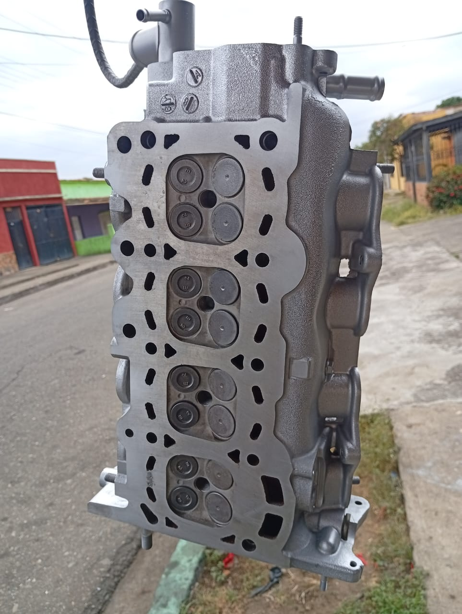

En Regasa, somos expertos en la reparación, rectificación, cepillado y puesta a punto integral de culatas o cámaras de motor. ¿Problemas con la cámara o culata de tu motor? Tenemos la solución profesional y económica.

En REGASA, nos especializamos en devolverle la vida a tu motor con precisión milimétrica. Como la rectificadora de confianza en Barinas, realizamos el mantenimiento integral de la camara, asegurando un sellado perfecto y un rendimiento óptimo. Si necesitas rectificar con garantía y tecnología moderna, tu motor está en las mejores manos. 🟢🔧

¿Problemas de recalentamiento o pérdida de compresión? El primer paso es un diagnóstico profesional de la camara. En REGASA, contamos con la maquinaria necesaria para rectificar y planificar superficies, garantizando resultados duraderos para vehículos particulares y de carga en Barinas. Calidad técnica que se traduce en confianza para tu camino. 🚗🚛

El sector transporte y agrícola de Barinas exige soluciones robustas. En REGASA, somos expertos en rectificar la camara de motores diesel y maquinaria pesada, aplicando estándares de ingeniería que soportan el trabajo más duro. Somos la rectificadora que entiende la importancia de mantener tu herramienta de trabajo en perfecto estado. 🚜💯
Mira el estado real en que recibimos las cámaras (culatas) y cómo las entregamos después de repararlas.
En Regasa te atiende
La misma atención de confianza de siempre para la reparación de la cámara de tu carro.
Escríbele a Omar por WhatsAppEs muy común escuchar ambos términos en el taller. Aquí te explicamos la diferencia.
Técnicamente, la pieza correcta se llama "Culata" (o Cabeza de Cilindros). Es el componente superior del motor donde se alojan las válvulas, los conductos de admisión y escape.
Pero en Barinas, muchos la conocen como "Cámara". Aquí no nos confundimos: cuando hablamos de "reparar la cámara o culata", nuestro equipo entiende perfectamente que se trata de la rectificación y reparación de la culata o cámara.
Servicio especializado para vehículos locales.
Rectificar tu culata o cámara original cuesta menos que comprarla nueva.
Como la principal rectificadora barinas, nos comprometemos a devolverle la vida a tu motor. Contamos con equipos modernos y un equipo técnico capacitado para resolver problemas complejos en culatas de gasolina y diésel.
No importando la marca de tu vehículo, en Regasa ofrecemos garantía y confianza en cada reparación.


Soluciones completas para recuperar la salud de tu motor.
Identificamos con precisión la falla en su culata o cámara de motor mediante pruebas de compresión, hermeticidad y revisión visual experta. Sepa exactamente qué le pasa a su vehículo.
Agendar AhoraCorregimos deformaciones y grietas superficiales con maquinaria especializada. Este proceso es esencial si la culata o cámara está alabada o torcida.
Consultar ServicioInstalamos válvulas de culata nuevas y rectificamos sus asientos para una combustión óptima y máxima compresión en la culata o cámara de motor.
Cotizar AhoraEliminamos carbonilla y sedimentos de todos los pasajes de refrigerante y aceite de la cámara o culata. Mejora la refrigeración y lubricación del motor.
Reemplazamos todo el kit de gomas de la culata o cámara con repuestos de primera calidad. Utilizamos juntas y sellos que garantizan un sellado hermético.
Aplicamos técnicas especializadas para reparar grietas en la culata o cámara, recuperando la integridad estructural y evitando el costoso cambio de la pieza completa.
Somos más que un taller, somos su especialista de confianza en reparación de cámaras y culatas.
Especializados exclusivamente en reparación de cámaras y culatas.
Equipos de rectificación y cepillado de alta precisión para su culata o cámara.
Reparar su culata o cámara original es más económico y seguro.
Restauramos el rendimiento de la culata o cámara para que rinda por más kilómetros.
Si su vehículo presenta alguno de estos síntomas, es muy probable que la cámara o culata del motor requiera atención profesional.
Sobrecalentamiento constante del motor que no se soluciona cambiando el termostato. Una culata o cámara dañada puede causar sobrecalentamiento crónico.
Pérdida notable de fuerza y aumento en el consumo de combustible. Esto indica problemas de compresión en la culata o cámara de motor.
Humo blanco y denso saliendo del escape de forma continua. Es señal de que refrigerante entra en la cámara o culata de combustión.
Aceite con apariencia lechosa (como mayonesa) en la varilla. Esto indica mezcla de refrigerante y aceite por una falla en la culata o cámara.
Un vistazo a la calidad que aplicamos en cada reparación de culata o cámara en Barinas.
Válvulas de admisión y escape de alta calidad
Instalación de nuevas válvulas de admisión y escape en una culata o cámara de motor.

Restauración completa de rendimiento
Reparación integral de culata o cámara audi a3 2.0 tdi con cepillado y cambio de válvulas.

Rectificación de precisión para camioneta
Proceso de rectificación de culata o cámara ford ranger 2.5 diesel para corregir alabeo.

Mantenimiento integral para 4x4
Servicio completo a culata o cámara mitsubishi montero 2.5 incluyendo limpieza ultrasónica.

Proceso completo de reconstrucción
Reconstrucción completa de culata o cámara nissan pathfinder con soldadura especializada.

Mantenimiento preventivo para furgoneta
Mantenimiento preventivo a culata o cámara vw t5 2.5 tdi de una furgoneta de transporte.

Especialistas en todo tipo de motor
Servicio integral en nuestra rectificadora de cámaras en Barinas para motores diésel y gasolina.

Precisión industrial
Proceso de cepillado de planos para maquinaria pesada y vehículos industriales en Barinas.

Trabajo de precisión
Rectificación de alta precisión en asientos y válvulas para garantizar el sellado perfecto.
Vea en detalle cómo realizamos nuestros trabajos de rectificación en Barinas.
Atendemos clientes de los 12 municipios del estado. Elige tu zona en el mapa o en la lista:
Nuestro taller Municipios Parroquias · Toca un punto para ver su página. Ubicaciones aproximadas.
¿Su vehículo presenta síntomas de problemas en la cámara o culata? No espere a que el daño sea mayor. Contáctenos para un diagnóstico sin costo.